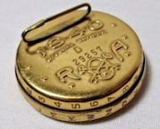
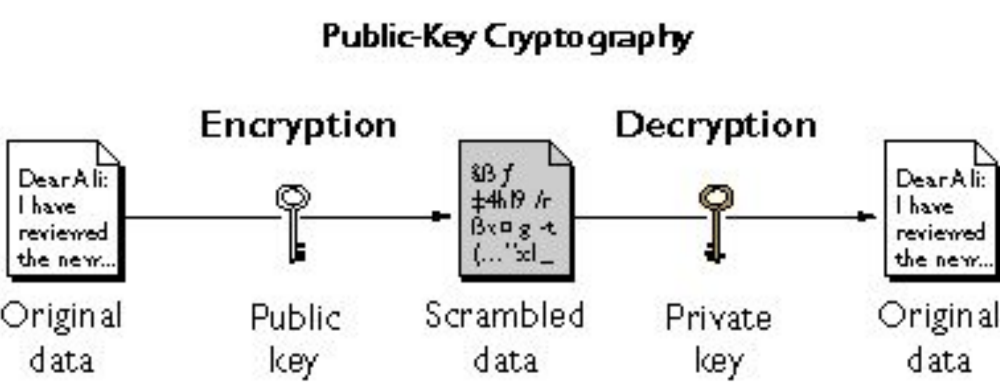
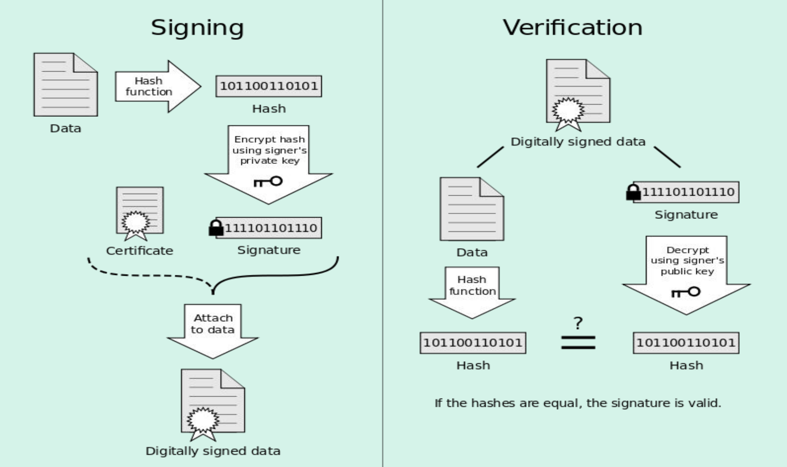
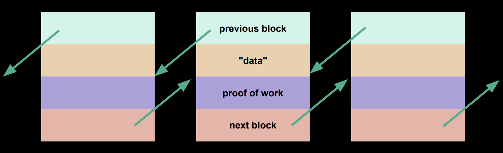

Lecture 4
Overview
-
Cryptography is the art and science of obscuring and protecting information.
-
We use cryptography to provide a level of security against an adversary who might do bad things with the information.
Ciphers
- Ciphers are algorithms (a set of step-by-step instructions) used to obscure (or encipher) or reveal (or decipher) information.
Substitution Ciphers
-
A common substitution cipher that we might have seen is pictured here:

-
In this cipher, each letter corresponds to a number.
-
The attack vector in this cipher, or the vulnerability in this cipher, lies in the pin. Anyone with access to this pin will be able to break any cipher generated with this pin.
-
In this case, the decoder pin is considered the key.
Caesar Cipher
-
We can use the ordinal positions of letters in a cipher to generate this key:
A B C D … Y Z 1 2 3 4 … 25 26 -
We can also rotate the starting point. If we add 2 to every number, we might use this key:
A B C D … Y Z 3 4 5 6 … 27 28 -
Seeing a 27 and 28, though, might be a tipoff that the cipher was shifted in some way. To fix this, we might want to wrap back to 1 for numbers over 26. We might use this key instead:
A B C D … Y Z 3 4 5 6 … 1 2 -
There are only 26 ways to rotate this cipher while preserving the order of the letters. In other words, we have a very small number of keys that can be used to decipher using this cipher.
Vigenere Cipher
-
An improvement we can make to the Caesar cipher is to increase the number of keys.
-
While the Caesar cipher uses a single key, the Vigenere cipher uses multiple keys by selecting a keyword.
-
In the Vigenere cipher, for each new letter of message, it is enciphered using a different letter of the keyword.
-
To encrypt the message
HELLOusing the keywordLAW, we might come up with the following table:Plaintext H E L L O Ordinal Position 8 5 12 12 15 Keyword L A W L A Keyword Ordinal Position 12 1 23 12 1 Sum 20 6 35 24 16 Sum, Wrapping Around 20 6 9 24 16 Ciphertext T F I X P -
For the first letter, or
H, the ordinal position is 8. The first letter of our keyword isL, which has position 12. We add these to positions to get 20, and the letter at position 20 isT. Thus, the first letter of our cipher text isT. -
When we run out of letters in our keyword, we can re-use our keyword. Note that in the
Keywordrow,LAWis repeatededly used. -
Note that the two
Ls inHELLOmapped to different letters in the ciphertext, namelyIandX. This is different from the Caesar cipher, where theLs would map to the same letter. For example, if we shifted by 2, allLs would map toN.
-
-
Instead of just 26 possible keywords, we now have 26n possible keywords, where n is the number of letters in the keyword.
Frequency Analysis
-
Another issue with Caesar ciphers is that an adversary may be able to crack the code without a pin.
-
For example, if we see a single letter word in the message, we might be able to guess that the character or number represents
IorA. From there, we might be able to discover some patterns in the message. -
A pattern may be how frequently letters appear in the English language.
A B C D E F G H I J K M 8.1% 1.5% 2.8% 4.3% 12.7% 2.2% 2.0% 6.1% 7.0% 0.2% 0.8% 4.0% 2.4% N O P Q R S T U V W X Y Z 6.7% 7.5% 1.9% 0.1% 6.0% 6.3% 9.1% 2.8% 1.0% 2.4% 0.2% 2.0% 0.1% -
Some letters appear very frequently, such as
EorTand some letters appear very infrequently, such asJorK. Using these frequencies, we can look at what appears frequently or infrequently in the ciphertext and perhaps find certain patterns. -
While for humans it might be tedious to conduct frequency analysis to decode a message, a computer can do it very quickly.
Other Ciphers
-
Some ciphers substitute pairs or triples of characters at a time, which is more secure than mapping one-to-one as previously.
-
Some ciphers are transposition ciphers, which algorithmically rearrange the letters in a message.
-
The issue with these ciphers is that they’re easily cracked. Furthermore, we must be able to tell an ally what the key is without telling an adversary.
Hashes
-
Generally, while ciphers are reversible, hashes are not.
-
To hash some data, we run it through a hash function, which mathematically manipulates it in some way, and it outputs a value.
Passwords
-
A good service does not store passwords in their database. Instead, they store a hash of the password.
-
When you input a password, they’ll run the password through the hash function and check whether it matches the hash stored.
-
If the hashes match, odds are the right password was entered.
Hash Functions
-
Good hash functions should have the following qualities:
-
Use only the data being hashed
-
Use all of the data being hashed
-
Be deterministic (for the same input, we should always get the same output)
-
Uniformly distribute data (when mapping strings to values, strings should map evenly to all possible values)
-
Generate very different hash codes for very similar data
-
-
An example hash function (albeit a bad one) might be to add up the ordinal positions of all the letters in the hashed string.
-
STARwould map to 58. -
ARTS,RATS,SWAP,PAWS,WASP,MULL,BBBBBBBBBBBBBBBBBBBBBBBBBBBBBwould also all map to 58. -
This hash function is good in that it is not reversible. Having the value 58 does not necessarily tell us that the word was
STAR. -
This hash function, however, is bad in that it has a lot of collisions. In cryptography, we’d like to have no collisions at all.
-
Modern Cryptography
-
Modern cryptography is hashing, and the algorithms tend to work on clusters of characters rather than going character-by-character, as we did earlier.
-
Given data (files, images, videos, etc) of arbitrary sizes, most modern hash functions will map it to a string of bits that is always the exact same size.
-
Good cryptographic hash functions, usually referred to as digests should have the following qualities:
-
Be extremely difficult to reverse
-
Be deterministic
-
Generate very different hash codes for very similar data
-
Never allow two different sets of data to hash to the same value
-
-
We use cryptography every day on the internet, whether it’s for…
-
Email: encrypting emails from point to point
-
Secure web browsing: encrypting web traffic
-
VPN: encrypting communications with a network
-
Document storage: encrypting pieces of files
-
SHA-1
-
SHA-1 is a famous crytographic hash function first developed by the NSA in the mid-1900s.
-
SHA-1 digests are always 160 bits in length, meaning there are 2160, approximately 1048, possible SHA-1 digests. The probability of a collision wih SHA-1 is equivalent to finding 1 specific grain of sand on 8 quintillion Earths!
-
SHA-1 is now broken—a research team has come up with a way to systematically generate collisions. For more information, visit shattered.io.
- Since it is now feasible to generate PDFs with the same digital signature, it is possible to create a valid signature for a high-rent contract by having someone sign a low-rent contract.
-
Many other cryptographic standards are in use as well.
-
SHA-2andSHA-3use more bits in their digest. -
MD5(no longer secure but used as a checksum) andMD6
-
Public Key Cryptography
-
In public key cryptography, also called asymmetric encryption, there are two functions
f(n)andg(n), each of which is a one-way function that reverses each other. -
One of those functions is public and anyone can use it to encrupt information intended for you. The other is private, known only to you, and can be used to reverse the encryption of the first.
-
For example, for
f(n), we might havef(n) = n x 8. Then,f(14) = 112. This might be our public function, where if anyone wants to send us a message, they will plug their data intof(n)and send us that encrypted message.- Note that an adversary would not be able to undo this function. For example,
f(n) = 10 x n - 28would also give usf(14) = 112.
- Note that an adversary would not be able to undo this function. For example,
-
Generally, to generate these keys, we start with a really large, normally prime, randomly-generated number. From there, two complementary one-way functions (quite a bit more complicated than our
f(n)) are generated to create a public-private key pair. -
These keys are typically generated by a program, such as RSA.
-
The general flow of asymmetric encryption is shown here:

Digital Signatures
-
Digital signatures are almost the inverse of encryption.
-
Using a digital signature, one can verify the authenticity of the sender of a document.
-
Digital signatures are usually 256 bits, meaning 2256 distinct digital signatures are possible.
-
The general flow of verifying a digital signature is shown here:

-
The signing part of the process includes the following:
-
Starting from the top left, at data, we have a file with a signature.
-
We pass this file through a hash function (usually well known) and we get a hash.
-
We encrypt the hash with a private key.
-
We send the encrypted signature along with the original file.
-
-
The verification part of the process includes the following:
-
The digitally signed data includes the original file and the encrypted signature.
-
We take the encrypted signature and use the signer’s public key, which is reciprocal of the signer’s private key. After decrypting, we get a hash.
-
We run the file through the same hash function that the signer used to get another hash.
-
If these two hashes are equal, then the signature is very likely to be valid.
-
Blockchain
-
Digital signatures and their ease of verification provide the basis for the blockchain.
-
The most familiar use of blockchain is for cryptocurrency, such as Bitcoin.
-
For a more in-depth mathematical discussion of Bloackchain and Bitcoin, check out 3Blue1Brown’s video.
Structure
-
The blockchain is essentially a linked list, or a chain of blocks. Instead of storing 3 values (previous pointer, next pointer, and data), these blocks will store 4 values.

-
The “data” in this case is a list of transactions, each transaction having a digital signature.
-
For Bitcoin, transactions represent money being exchanged. However, the data doesn’t have to be a list of transactions. It could be a digitally signed PDF scan of a contract between two people, among many other possibilities.
-
The “proof of work” allows Bitcoin to determine what the true set of transactions, or ledgers, are.
-
-
The ledger is decentralized, meaning each time the data is recorded, everyone must record that transaction on their own copy of the ledger, in that block.
-
To determine which block is legitimate, since everyone has their own copy and could hypothetically modify it, most cryptocurrencies assume that the chain with the most computational work put into it is the “true” chain.
Proof of Work
-
The proof of work allows us to determine which chain has had the most computational work put into it.
-
To prove a particular block, we hash the block over and over, coupled with some random number, until we find a highly unusual pattern in the first
nout of 256 bits. -
The proof of work is the number that we hash with the block to get that unique pattern.
-
For example, we can take a block and hash it with
12345. Suppose we get the unique pattern of zeroes and ones.- To verify this block, someone could simply hash the proof of work, that we announce, with the block to find that unique pattern of zeroes and ones.
-
This way, we can prevent a fraudulent transaction.
-
Assume Person A is initiating a fraudulent transaction and announces to Person B that A will pay B 100 dollars. A only announces this transaction to B and not to anyone else maintaining their own copies of this blockchain.
-
Person A must verify that transaction. Person A appends that transaction to their own copy of the blockchain, and in order to prove that block, person A must find a number, that when hashed with the entire block, produces the unique pattern before anyone else does.
-
Additionally, other transactions are going into Person A’s ledger, and Person A will have to keep proving their work over and over. This means that Person A must stay ahead and continuously find the secret numbers that when hashed create that unique pattern. This is to ensure that Person A’s blockchain is considered the correct set of transactions.
-
Person A cannot keep up with this, and at some point, some other chain will be considered valid.
-
-
The smallest change in any of the transactions would produce a totally different hash, making that block unverified.
-
The longer a chain gets, the more likely it is that the chain consists of only verified transactions.